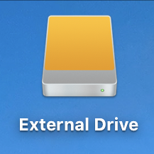
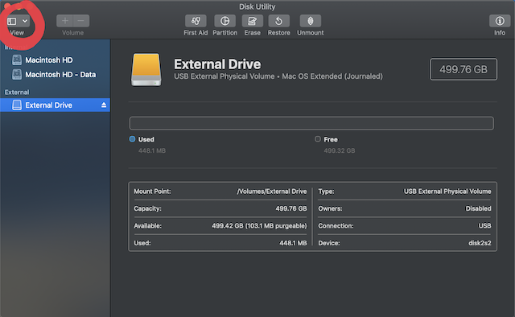
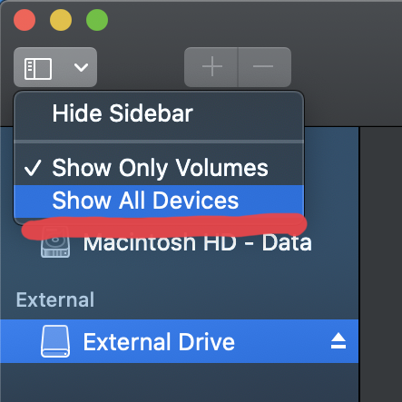
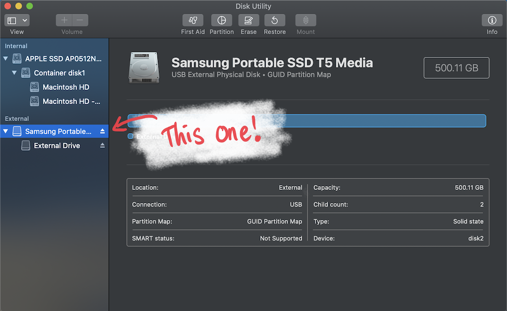
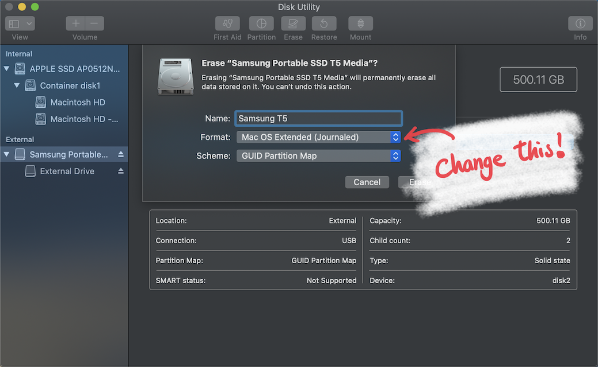
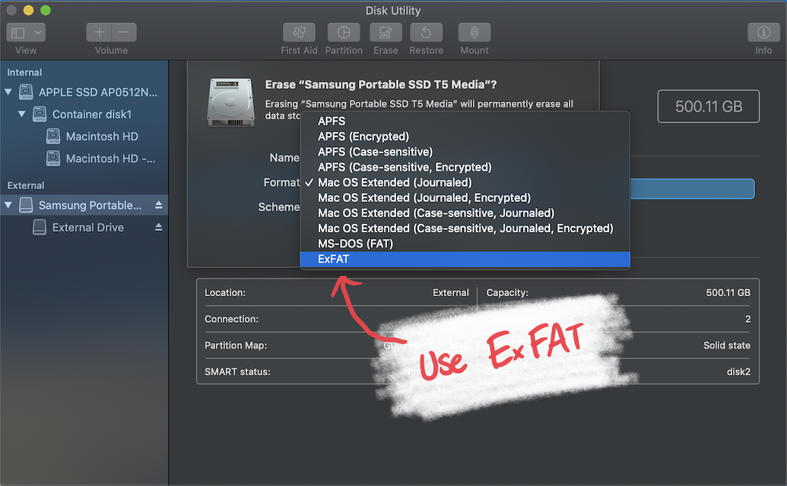

If you have purchased a new hard-drive, it’s possible you can’t use it on your Mac. But maybe you can see the folders inside but its not readable or writable? How come? This is usually because your drive isn’t formatted for Mac! Here is how you do it!
Step 1:
Plug in your drive (make sure your drive is empty or you’ve saved a copy elsewhere as this will delete all your data.) It’ll appear like this!
Step 2:
Open Disk Utility from Spotlight or finding it in the launchpad.

Step 3:
Once in Disk Utility, click the top left where it shows view, this will bring up a small drop down menu and click Show All Devices.
 Step 4:
Click on the name tag above the selected drive (in this example, it is Samsung Portable SSD T5 Media).
Step 5:
Locate and press the Erase button in the centre command strip, this will bring up a menu where you can rename your drive and reformat!
Step 6:
When choosing a format to support both Windows/Mac, you need to use ExFAT! This will allow you to use your drive on both operating systems! Leave the Scheme as GUID Partition Map.
Step 7:
Press Erase and voila! Your drive should now be reformatted and can be use on Windows and MacOS!